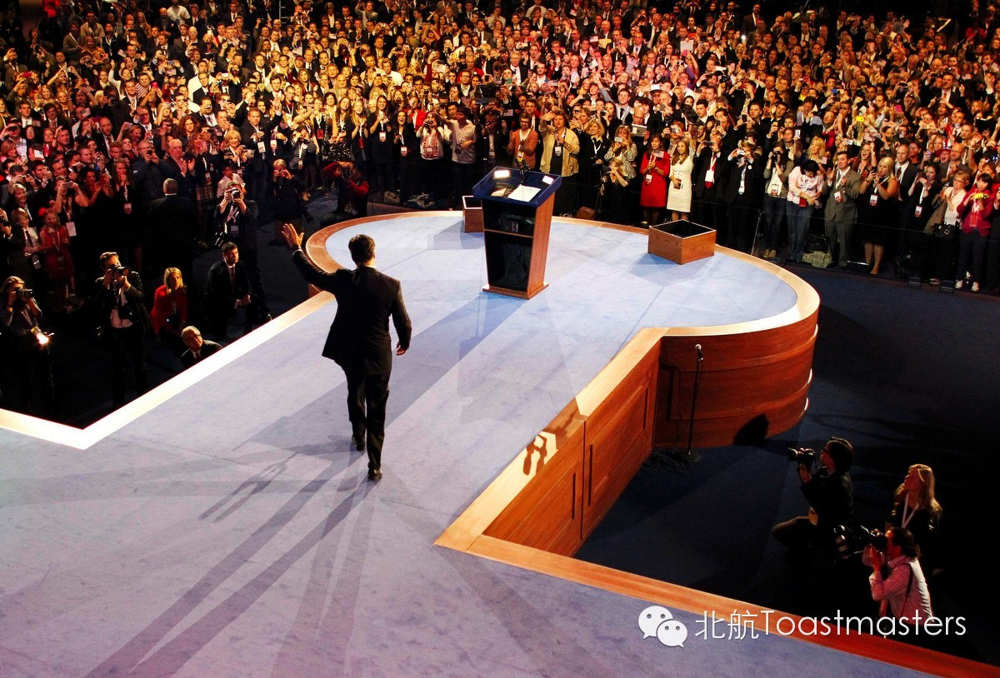
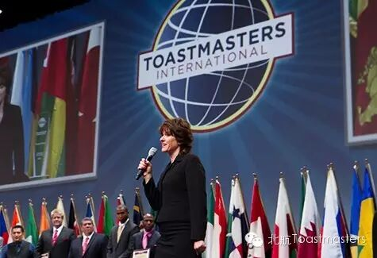
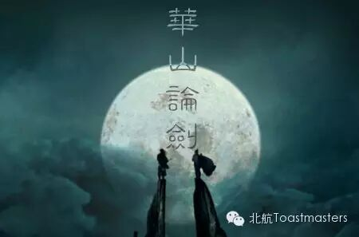
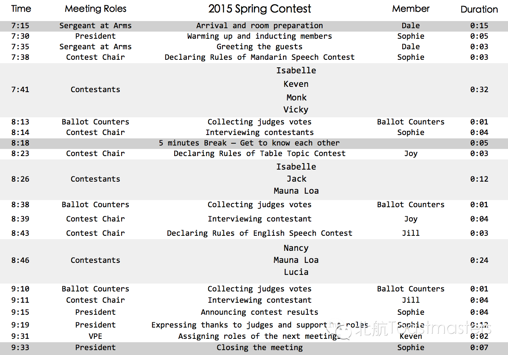

Spring Contest
Time: 19:30-21:30, Friday, March 13th
Venue: Room G849 New Main Building, Beihang University

AAAAAAAAAAAAAAAAAAAAAAAAAAAAAABBBBBBBBBBBBBBBBBBBBBBBBBBBBBBBBBBBBBBBBBBBB
Hey you guys, long time no C!!!
I miss you so much!
This Friday, Beihang Toastmaster finially starts!
New semester, new start.
And here we are, 2015 Beihang TMC Spring Contest!
Speech Contest

Speech contests are a Toastmasters tradition. Each year thousands of Toastmasters compete in the speech contests. Competition begins with club contests and winners continue competing through the area, division and district levels. The International competition has two additional levels — semifinal and the World Championship of Public Speaking.
In Toastmaster world, to take part in contests is the fastest way to improve yourself. I still remembered my first time. That was a spring two years ago and I didn't finish my first speech. So the speech contest became my virgin show. I practiced that for so many times and knew a bunch of friends from other club. After all it was so unforgettable.
中文演讲比赛——华山论剑

五湖四海皆兄弟,汇聚一堂靠缘分。我们都是能说会道之人,能把头马演讲发扬广大是我们共同的梦想。
今日群雄荟萃武艺超群，终将鹿死谁手犹未可知。是华山剑宗传人令狐凯文，还是天鹰教主千金殷女侠，亦或是峨眉掌门崔师太呢！？
激战之际，但见一个身穿青袍的枯瘦僧人拿著一把扫帚，正在弓身扫地。这僧人年纪不少，稀稀疏疏的几根长须已然全白。扫地僧停下手中的扫把，冷笑道：
“年轻人，你们还是习武姿势不对啊”
Meeting Agenda

Map
Our meeting venue changed to RoomG849, New Main Building, Beihang University (北航新主楼G849房间). Click here to see large map. And you can phone to Keven for help.
TEL: 15810539853
See you in the meeting!

https://mp.weixin.qq.com/s/9FR-JQrvPUdRbXgTnTo2AQ
本页为抢救式本地归档，图文已永久保存。